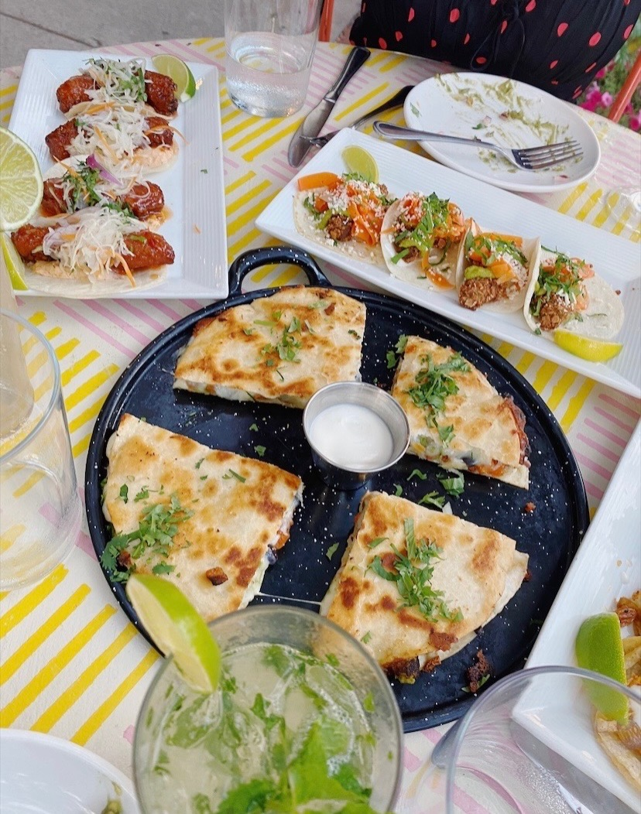
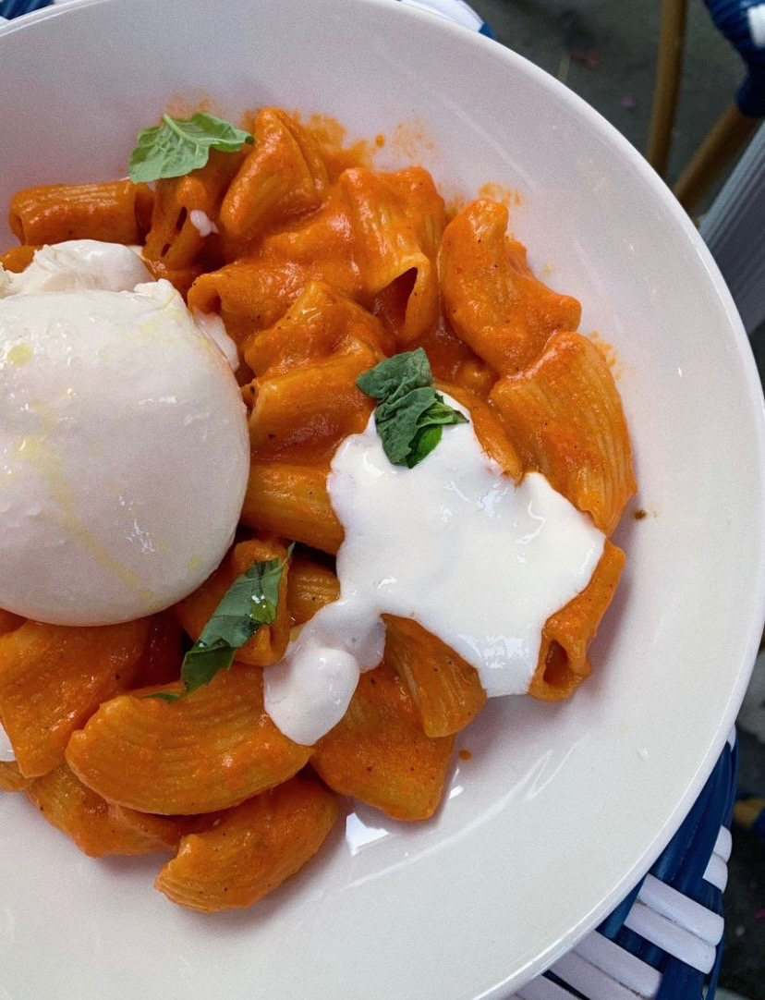

Favorite Shows
I love to hang out with my friends and watch different shows and movies. Currently, my friends and I are watching Grey's Anatomy. My all time favorite shows are Gilmore Girls, One tree hill, Grey's Anatomy, New Girl, and some of my new favorites include Bridgerton, and Emily in Paris. I'd say that I prefer shows that are more girl-oriented, or involve high school or college drama. Suspenseful or sci fi shows are not my thing.

Favorite Food
My favorite kind of food is Indian food. Originally, I didn't like Indian food because I had eaten it too much and gotten sick of it, but now being away at college has made me appreciate it more. I also really like Mexican food... a particular dish. I like chicken fajitas because I can make it on my own, and it has a lot of seasoning. I think they are superior to tacos because they are warm and the cheese melts in them. Chicken quesadillas are also amazing. Lastly, I love buffalo wild wings, asian zing boneless wings.
Favorite Dinners
These are pictures of my favorite dinners. The quesadillas are from Isalita in Ann Arbor. The pasta is from La Pecora Bianca in NYC.
 